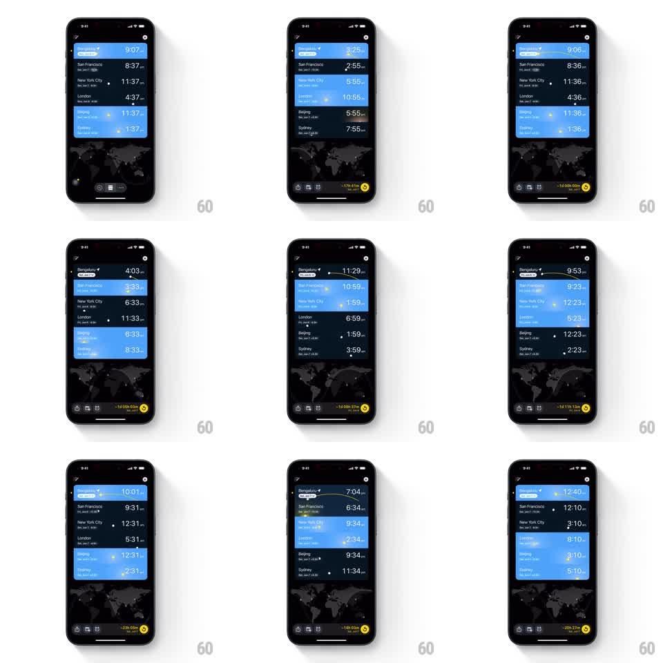

Media
Frame-by-frame

Rebuild this interaction 1:1: World Clock Master's time travel - swiping horizontally on a city row scrubs global time: every city's clock, its day/night row gradient, and the world map's shadow all move together.

Rebuild this interaction 1:1: World Clock Master's time travel - swiping horizontally on a city row scrubs global time: every city's clock, its day/night row gradient, and the world map's shadow all move together.
## Integration
Integration: stack-agnostic spec - springs given as stiffness/damping, timed motions as duration + curve; map every value to your framework and animation library of choice.
## Scene
Dark world-clock list: rows for Bengaluru, San Francisco, New York City, London, Beijing, Sydney - each with city name, date line, and a large time. Each row's background is a live gradient of that city's sky (bright blue for day, near-black for night, warm bands at dawn/dusk). A faint world map sits behind the list with a day/night terminator shadow. Bottom bar shows the offset chip ("-17h 41m", "+20h 27m"...).
## Motion spec
Pattern: horizontal time scrub with synchronized per-city sky theming.
- Swiping horizontally on any row scrubs time 1:1 (~2h per screen width); all city times tick together (minutes crossfade per change, 120ms).
- Each row's sky gradient shifts with its own local time: blue day slides to dusk orange to night black and back (continuous, keyed to the row's hour).
- The map's terminator shadow sweeps across the world in sync (same scrub angle, no lag).
- The offset chip counts total travel from now, flipping sign and color (yellow for past, green for future) at zero (150ms swap).
- Release decays with momentum (friction ~0.93/frame); a tap on the chip snaps back to the present (spring ~240/18) as all rows and the shadow glide home.
## Calibration
- Times, row gradients, and the map shadow are computed from one shared clock offset - they can never disagree by a frame.
- Rows differ from each other: when Bengaluru is noon-blue, San Francisco is night-black.
## Reduced motion
Time steps discretely; gradients swap between day/dusk/night presets (200ms crossfade).
## Don't miss
- The scrub works on the row, not a slider - the whole list is the control surface.
- The date line under each city rolls over ("Mon, Jan 6" -> "Tue, Jan 7") exactly at its local midnight.